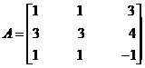

MATHS :: Lecture 12 :: MATRICES

MATRICES
An arrangement of numbers in rows and columns. A matrix of type “(m x n)” is defined as arrangement of (m x n) numbers in ‘m’ rows & ‘n’ columns. Usually these numbers are enclosed within square brackets [ ] (or) simple brackets ( ) are denoted by capital letters A, B, C etc.
Example

A = B =
Here A is of type 3 x 4 & B is of type 4 x 3
Matrix
Types of matrices
1. Row matrix: It is a matrix containing only one row and several columns .It is also called as row vector.
Example:
[1 3 7 9 6 ]
(1 x 5) matrix called row vector.
2. Column matrix: It is a matrix containing only one column. It is also known as
column vector.
Example:
(3x1)
3. Square matrix: A matrix is called as square matrix, if the number of rows is equal to number of columns.
Example
The elements a11, a22, a33 etc fall along the diagonal & this is called a leading diagonal (or) principal diagonal of the matrix.
4. Trace of the matrix
It is defined as the sum of the elements along the leading diagonal.
In this above matrix the trace of the matrix is
4 + 9 + 2 = 15.
5. Diagonal matrix
It is a square matrix in which all the elements other than in the leading diagonals are zero’s.
Eg:
6.Scalar matrix
It is a diagonal matrix in which all the elements in the leading diagonal are same.
Eg:
7. Unit matrix or identify matrix
It is a diagonal matrix, in which the elements along the leading diagonal are equal to one. It is denoted by I
I =
8. Zero matrix (or) Non-matrix
It is matrix all of whole elements are equal to zero denoted by “O”

Eg: O = 2 x 3 O = 2 x 2
9. Triangular matrix
There are two types. 1. Lower Triangular Matrix 2. Upper Triangular Matrix.
Lower Triangular matrix
It is a square matrix in which all the elements above the leading diagonal are zeros.
Eg:
Upper Triangular matrix
Square matrix in which all the elements below the leading diagonal are zeros
Eg:
10. Symmetric matrix
A square matrix A = {aij} said i = 1 to n ; j = 1 to n said
to symmetric, if for all i and j.
Eg:
aij = -aji
A square matrix A = {aij} i = 1 to n , j = 1 to n is called skew symmetric, if for all i & j. Here aii = 0 for all i
Eg:
Algebra of matrices
1. Equality of matrices
Two matrices A & B are equal, if and only if,
- Both A & B are of the same type
- Every element of ‘B’ is the same as the corresponding element of ‘A’.
Example

 1.
1.
A = B =
Here order of matrix A is not same as order matrix B, the two matrices are not equal.
A ¹ B
2. Find the value of a and b given
Solution:
The given matrices are equal
\ a = 3, b = 2
2. Addition of matrices
Two matrices A & B can be added if and only if,
- Both are of the same type.
- The resulting matrix of A & B is also of same type and is obtained by adding the all elements of ‘A’ to the corresponding elements of ‘B’.
Example
1. Find
Solution
 ==
==
3. Subtraction of the matrices
This can be done, when both the matrices are of same type.
(A-B) is obtained by subtracting the elements of ‘A’ with corresponding elements of ‘B’.
Example
1. Find
Solution
 ==
==
4. Multiplication of matrix
They are of two types : 1. By a scalar K B.
2. By a matrix A x B.
i) Scalar multiplication
To multiply a matrix ‘A’ by a scalar ‘K’, then multiply every element of a matrix ‘A’ by that scalar.
Example
1. Find
Solution:
 =
=
ii) Matrix Multiplication
Two matrices A & B can be multiplied to form the matrix product AB, if and only if the number of columns of 1st matrix A is equal to the number of rows of 2nd matrix B. If A is an (m x p) and B is an (p x n) then the matrix product AB can be formed. AB is a matrix by (m x n).
In this case the matrices A and B are said to be conformable for matrix multiplication.
Example
1. Find
Solution
=
=
=
Note: The matrix product AB is different from the matrix product BA.
1. The matrix AB can be formed but not BA
Eg: A is a (2 x 3) matrix
B is a (3 x 5) matrix
AB alone can be formed and it is a (2 x 5) matrix.
2. Even if AB & BA can be formed, they need not be of same type.
Eg: A is a (2 x 3) matrix
B is a (3 x 2) matrix
AB can be formed and is a (2 x 2) matrix
BA can be formed and is a (3x 3) matrix
3. Even if AB & BA are of the same type, they needn’t be equal. Because, they need not
be identical.
Eg: A is a (3 x 3) matrix
B is a (3 x 3) matrix
AB is a (3 x 3) matrix
BA is a (3x 3) matrix
AB ¹ BA
The multiplication of any matrix with null matrix the resultant matrix is also a null matrix.
When any matrix (ie.) A is multiplied by unit matrix; the resultant matrix is ‘A’ itself.
Transpose of a matrix
The Transpose of any matrix (‘A’) is obtained by interchanging the rows & columns of ‘A’ and is denoted by AT. If A is of type (m x n), then AT is of type (n x m).
Eg: A =
AT =
(3 x 2) (2 x 3)
Properties of transpose of a matrix
1) (AT)T = A
2) (AB)T = BT AT is known as the reversal Law of Transpose of product of two matrices.
DETERMINANTS
Every square matrix A of order n x n with entries real or complex there exists a number called the determinant of the matrix A denoted by by çAçor det (A). The determinant formed by the elements of A is said to be the determinant of the matrix A..
 Consider the 2nd order determinant.
Consider the 2nd order determinant.
= a1 b2 – a2 b1
çA ç =
a2 b2
= 0-3 = -3
çA ç =
1 0
Consider the 3rd order determinant,
a2 b2 c2
a3 b3 c3
This can be expanded along any row or any column. Usually we expand by the 1st row. On expanding along the 1st row
+ c1
- b1
b3 c3 a3 c3 a3 b3
Minors
Let A = ( )be a determinant of order n. The minor of the element is the determinant formed by deleting ith row and jth column in which the element belongs and the cofactor of the element is where M is the minor of ith row and jth column .
)be a determinant of order n. The minor of the element is the determinant formed by deleting ith row and jth column in which the element belongs and the cofactor of the element is where M is the minor of ith row and jth column .
Example 1 Calculate the determinant of the following matrices.
(a)
Solution
Singular and Non-Singular Matrices:
Definition
A square matrix ‘A’ is said to be singular if, çA ç = 0 and it is called non-singular if çA ç ¹ 0.
Note
Only square matrices have determinants.
Example: Find the solution for the matrix
Here çA ç = 0 .So the given matrix is singular
Properties of determinants
1. The value of a determinant is unaltered by interchanging its rows and columns.
Example
Let  then
then

Let us interchange the rows and columns of A. Thus we get new matrix A1.
Then
Hence det (A) = det (A1).
2. If any two rows (columns) of a determinant are interchanged the determinant changes its sign but its numerical value is unaltered.
Example
Let then

Let A1 be the matrix obtained from A by interchanging the first and second row. i.e R1 and R2.
Then
Hence det (A) = - det (A1).
3. If two rows (columns) of a determinant are identical then the value of the terminant is zero.
Example
Let  then
Hence
4. If every element in a row ( or column) of a determinant is multiplied by a constant “k” then the value of the determinant is multiplied by k.
Example
Let  then
then
Let A1 be the matrix obtained by multiplying the elements of the first row by 2 (ie. here k =2) then
Hence det (A) = 2 det (A1).
5. If every element in any row (column) can be expressed as the sum of two quantities then given determinant can be expressed as the sum of two determinants of the same order with the elements of the remaining rows (columns) of both being the same.
Example
Let then
6. A determinant is unaltered when to each element of any row (column) is added to those of several other rows (columns) multiplied respectively by constant factors.
Example
Let  then
then
Let A1 be a matrix obtained when the elements C1 of A are added to those of second column and third column multiplied respectively by constants 2 and 3. Then
| Download this lecture as PDF here |